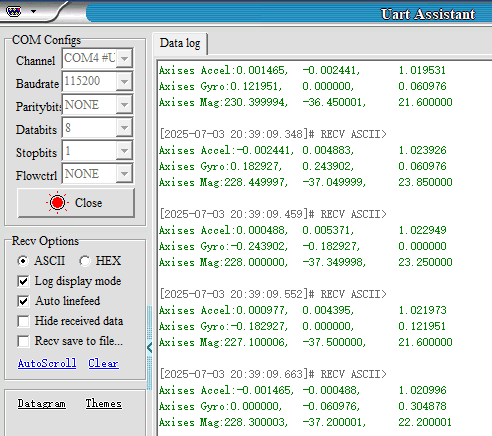

Чтение данных IMU
- Цель эксперимента
- Подключение оборудования
- Анализ основного кода
- Компиляция, загрузка и прошивка firmware
- Результаты эксперимента
1. Цель эксперимента
Используя чип IMU-датчика (датчика ориентации) на плате управления STM32, считать необработанные (raw) данные с устройства IMU.
2. Подключение оборудования
Как показано на рисунке ниже, плата управления STM32 имеет встроенный чип IMU-датчика ориентации. Дополнительные внешние устройства подключать не требуется. Нужно только подключить USB-кабель Type-C к компьютеру и к разъёму Connect на плате управления STM32.

3. Анализ основного кода
Путь к исходному коду программы:
Board_Samples/STM32_Samples/Read_IMU
В качестве датчика IMU используется чип ICM20948, который передаёт данные по интерфейсу SPI. В соответствии с назначением выводов, сначала нужно инициализировать SPI2 в режиме хоста (master).


void MX_SPI2_Init(void)
{
hspi2.Instance = SPI2;
hspi2.Init.Mode = SPI_MODE_MASTER;
hspi2.Init.Direction = SPI_DIRECTION_2LINES;
hspi2.Init.DataSize = SPI_DATASIZE_8BIT;
hspi2.Init.CLKPolarity = SPI_POLARITY_HIGH;
hspi2.Init.CLKPhase = SPI_PHASE_2EDGE;
hspi2.Init.NSS = SPI_NSS_SOFT;
hspi2.Init.BaudRatePrescaler = SPI_BAUDRATEPRESCALER_256;
hspi2.Init.FirstBit = SPI_FIRSTBIT_MSB;
hspi2.Init.TIMode = SPI_TIMODE_DISABLE;
hspi2.Init.CRCCalculation = SPI_CRCCALCULATION_DISABLE;
hspi2.Init.CRCPolynomial = 0x0;
hspi2.Init.NSSPMode = SPI_NSS_PULSE_ENABLE;
hspi2.Init.NSSPolarity = SPI_NSS_POLARITY_LOW;
hspi2.Init.FifoThreshold = SPI_FIFO_THRESHOLD_01DATA;
hspi2.Init.TxCRCInitializationPattern =
SPI_CRC_INITIALIZATION_ALL_ZERO_PATTERN;
hspi2.Init.RxCRCInitializationPattern =
SPI_CRC_INITIALIZATION_ALL_ZERO_PATTERN;
hspi2.Init.MasterSSIdleness = SPI_MASTER_SS_IDLENESS_00CYCLE;
hspi2.Init.MasterInterDataIdleness = SPI_MASTER_INTERDATA_IDLENESS_00CYCLE;

hspi2.Init.MasterReceiverAutoSusp = SPI_MASTER_RX_AUTOSUSP_DISABLE;
hspi2.Init.MasterKeepIOState = SPI_MASTER_KEEP_IO_STATE_DISABLE;
hspi2.Init.IOSwap = SPI_IO_SWAP_DISABLE;
if (HAL_SPI_Init(&hspi2) != HAL_OK)
{
Error_Handler();
}
}
Включение и выключение функции SPI-связи ICM20948.
static void ICM20948_Active()
{
HAL_GPIO_WritePin(ICM20948_CS_PORT, ICM20948_CS_PIN, RESET);
}
static void ICM20948_NoActive()
{
HAL_GPIO_WritePin(ICM20948_CS_PORT, ICM20948_CS_PIN, SET);
}
Чтение одного байта из регистра reg.
static uint8_t read_single_reg(userbank_t ub, uint8_t reg)
{
uint8_t read_reg = READ | reg;
uint8_t reg_val;
select_user_bank(ub);
ICM20948_Active();
HAL_SPI_Transmit(ICM20948_SPI, &read_reg, 1, 1000);
HAL_SPI_Receive(ICM20948_SPI, ®_val, 1, 1000);
ICM20948_NoActive();
return reg_val;
}
Чтение нескольких байт данных из регистра reg.
static uint8_t* read_multiple_reg(userbank_t ub, uint8_t reg, uint8_t len)
{
uint8_t read_reg = READ | reg;
static uint8_t reg_val[MAX_RX_BUF];
if (len > MAX_RX_BUF) return NULL;
select_user_bank(ub);
ICM20948_Active();
HAL_SPI_Transmit(ICM20948_SPI, &read_reg, 1, 1000);
HAL_SPI_Receive(ICM20948_SPI, reg_val, len, 1000);
ICM20948_NoActive();
return reg_val;
}
Запись одного байта в регистр reg.
static void write_single_reg(userbank_t ub, uint8_t reg, uint8_t val)
{
uint8_t write_reg[2];
write_reg[0] = WRITE | reg;
write_reg[1] = val;
select_user_bank(ub);
ICM20948_Active();
HAL_SPI_Transmit(ICM20948_SPI, write_reg, 2, 1000);
ICM20948_NoActive();
}
Запись нескольких байт данных в регистр reg.
static void write_multiple_reg(userbank_t ub, uint8_t reg, uint8_t* val, uint8_t
len)
{
uint8_t write_reg = WRITE | reg;
select_user_bank(ub);
ICM20948_Active();
HAL_SPI_Transmit(ICM20948_SPI, &write_reg, 1, 1000);
HAL_SPI_Transmit(ICM20948_SPI, val, len, 1000);
ICM20948_NoActive();
}
Чтение значения who am i у ICM20948 и проверка соответствия требованиям.
bool ICM20948_who_am_i()
{
uint8_t ICM20948_id = read_single_reg(ub_0, B0_WHO_AM_I);
if(ICM20948_id == ICM20948_ID)
return true;
else
return false;
}
Сброс и пробуждение чипа ICM20948.
static void ICM20948_device_reset()
{
write_single_reg(ub_0, B0_PWR_MGMT_1, 0x80 | 0x41);
ICM20948_Delay_Ms(100);
}
static void ICM20948_wakeup()
{
uint8_t new_val = read_single_reg(ub_0, B0_PWR_MGMT_1);
new_val &= 0xBF;
write_single_reg(ub_0, B0_PWR_MGMT_1, new_val);
ICM20948_Delay_Ms(100);
}
Функция самокалибровки гироскопа.
static void ICM20948_gyro_calibration()
{
raw_data_t temp;
int32_t gyro_bias[3] = {0};
uint8_t gyro_offset[6] = {0};
for(int i = 0; i < 100; i++)
{
ICM20948_gyro_read(&temp);
gyro_bias[0] += temp.x;
gyro_bias[1] += temp.y;
gyro_bias[2] += temp.z;
}
gyro_bias[0] /= 100;
gyro_bias[1] /= 100;
gyro_bias[2] /= 100;
// Construct the gyro biases for push to the hardware gyro bias registers,
// which are reset to zero upon device startup.
// Divide by 4 to get 32.9 LSB per deg/s to conform to expected bias input
format.
// Biases are additive, so change sign on calculated average gyro biases
gyro_offset[0] = (-gyro_bias[0] / 4 >> 8) & 0xFF;
gyro_offset[1] = (-gyro_bias[0] / 4) & 0xFF;
gyro_offset[2] = (-gyro_bias[1] / 4 >> 8) & 0xFF;
gyro_offset[3] = (-gyro_bias[1] / 4) & 0xFF;
gyro_offset[4] = (-gyro_bias[2] / 4 >> 8) & 0xFF;
gyro_offset[5] = (-gyro_bias[2] / 4) & 0xFF;
write_multiple_reg(ub_2, B2_XG_OFFS_USRH, gyro_offset, 6);
}
Функция самокалибровки акселерометра.
static void ICM20948_accel_calibration()
{
raw_data_t temp;
uint8_t* temp2;
uint8_t* temp3;
uint8_t* temp4;
int32_t accel_bias[3] = {0};
int32_t accel_bias_reg[3] = {0};
uint8_t accel_offset[6] = {0};
for(int i = 0; i < 100; i++)
{
ICM20948_accel_read(&temp);
accel_bias[0] += temp.x;
accel_bias[1] += temp.y;
accel_bias[2] += temp.z;
}
accel_bias[0] /= 100;
accel_bias[1] /= 100;
accel_bias[2] /= 100;
uint8_t mask_bit[3] = {0, 0, 0};
temp2 = read_multiple_reg(ub_1, B1_XA_OFFS_H, 2);
accel_bias_reg[0] = (int32_t)(temp2[0] << 8 | temp2[1]);
mask_bit[0] = temp2[1] & 0x01;
temp3 = read_multiple_reg(ub_1, B1_YA_OFFS_H, 2);
accel_bias_reg[1] = (int32_t)(temp3[0] << 8 | temp3[1]);
mask_bit[1] = temp3[1] & 0x01;
temp4 = read_multiple_reg(ub_1, B1_ZA_OFFS_H, 2);
accel_bias_reg[2] = (int32_t)(temp4[0] << 8 | temp4[1]);
mask_bit[2] = temp4[1] & 0x01;
accel_bias_reg[0] -= (accel_bias[0] / 8);
accel_bias_reg[1] -= (accel_bias[1] / 8);
accel_bias_reg[2] -= (accel_bias[2] / 8);
accel_offset[0] = (accel_bias_reg[0] >> 8) & 0xFF;
accel_offset[1] = (accel_bias_reg[0]) & 0xFE;
accel_offset[1] = accel_offset[1] | mask_bit[0];
accel_offset[2] = (accel_bias_reg[1] >> 8) & 0xFF;
accel_offset[3] = (accel_bias_reg[1]) & 0xFE;
accel_offset[3] = accel_offset[3] | mask_bit[1];
accel_offset[4] = (accel_bias_reg[2] >> 8) & 0xFF;
accel_offset[5] = (accel_bias_reg[2]) & 0xFE;
accel_offset[5] = accel_offset[5] | mask_bit[2];
write_multiple_reg(ub_1, B1_XA_OFFS_H, &accel_offset[0], 2);
write_multiple_reg(ub_1, B1_YA_OFFS_H, &accel_offset[2], 2);
write_multiple_reg(ub_1, B1_ZA_OFFS_H, &accel_offset[4], 2);
}
Установка диапазона гироскопа на 2000dps.
ICM20948_gyro_full_scale_select(_2000dps);
static void ICM20948_gyro_full_scale_select(gyro_scale_t full_scale)
{
uint8_t new_val = read_single_reg(ub_2, B2_GYRO_CONFIG_1);
switch(full_scale)
{
case _250dps :
new_val |= 0x00;
g_scale_gyro = 131.0;
break;
case _500dps :
new_val |= 0x02;
g_scale_gyro = 65.5;
break;
case _1000dps :
new_val |= 0x04;
g_scale_gyro = 32.8;
break;
case _2000dps :
new_val |= 0x06;
g_scale_gyro = 16.4;
break;
}
write_single_reg(ub_2, B2_GYRO_CONFIG_1, new_val);
}
Установка диапазона акселерометра на 16g.
ICM20948_accel_full_scale_select(_16g);
static void ICM20948_accel_full_scale_select(accel_scale_t full_scale)
{
uint8_t new_val = read_single_reg(ub_2, B2_ACCEL_CONFIG);
switch(full_scale)
{
case _2g :
new_val |= 0x00;
g_scale_accel = 16384;
break;
case _4g :
new_val |= 0x02;
g_scale_accel = 8192;
break;
case _8g :
new_val |= 0x04;
g_scale_accel = 4096;
break;
case _16g :
new_val |= 0x06;
g_scale_accel = 2048;
break;
}
write_single_reg(ub_2, B2_ACCEL_CONFIG, new_val);
}
Чтение необработанных данных гироскопа.
void ICM20948_gyro_read(raw_data_t* data)
{
uint8_t* temp = read_multiple_reg(ub_0, B0_GYRO_XOUT_H, 6);
data->x = (int16_t)(temp[0] << 8 | temp[1]);
data->y = (int16_t)(temp[2] << 8 | temp[3]);
data->z = (int16_t)(temp[4] << 8 | temp[5]);
}
Чтение необработанных данных акселерометра.
void ICM20948_accel_read(raw_data_t* data)
{
uint8_t* temp = read_multiple_reg(ub_0, B0_ACCEL_XOUT_H, 6);
data->x = (int16_t)(temp[0] << 8 | temp[1]);
data->y = (int16_t)(temp[2] << 8 | temp[3]);
// data->z = (int16_t)(temp[4] << 8 | temp[5]);
data->z = (int16_t)(temp[4] << 8 | temp[5]) + g_scale_accel;
// Add scale factor because calibraiton function offset gravity
acceleration.
}
Получение масштабированных данных акселерометра.
void ICM20948_accel_read_g(axises_t* data)
{
ICM20948_accel_read(&g_raw_accel);
data->x = (float)(g_raw_accel.x / g_scale_accel);
data->y = (float)(g_raw_accel.y / g_scale_accel);
data->z = (float)(g_raw_accel.z / g_scale_accel);
}
Получение масштабированных данных гироскопа.
void ICM20948_gyro_read_dps(axises_t* data)
{
ICM20948_gyro_read(&g_raw_gyro);
data->x = (float)(g_raw_gyro.x / g_scale_gyro);
data->y = (float)(g_raw_gyro.y / g_scale_gyro);
data->z = (float)(g_raw_gyro.z / g_scale_gyro);
}
Агрегация и чтение данных IMU.
void ICM20948_Read_Data_Handle(void)
{
ICM20948_gyro_read_dps(&g_axises_gyro);
ICM20948_accel_read_g(&g_axises_accel);
AK09916_mag_read_uT(&g_axises_mag);
}
Инициализация магнитометра.
void AK09916_init()
{
ICM20948_i2c_master_reset();
ICM20948_i2c_master_enable();
ICM20948_i2c_master_clk_frq(7);
while(!AK09916_who_am_i());
AK09916_soft_reset();
AK09916_operation_mode_setting(continuous_measurement_100hz);
}
Чтение и проверка идентификатора (ID) магнитометра.
bool AK09916_who_am_i()
{
uint8_t AK09916_id = read_single_mag_reg(MAG_WIA2);
if(AK09916_id == AK09916_ID)
return true;
else
return false;
}
Чтение необработанных данных магнитометра.
bool AK09916_mag_read(raw_data_t* data)
{
uint8_t* temp;
uint8_t drdy, hofl;
drdy = read_single_mag_reg(MAG_ST1) & 0x01;
if(!drdy) return false;
temp = read_multiple_mag_reg(MAG_HXL, 6);
hofl = read_single_mag_reg(MAG_ST2) & 0x08;
if(hofl) return false;
data->x = (int16_t)(temp[1] << 8 | temp[0]);
data->y = (int16_t)(temp[3] << 8 | temp[2]);
data->z = (int16_t)(temp[5] << 8 | temp[4]);
return true;
}
Чтение масштабированных данных магнитометра.
bool AK09916_mag_read_uT(axises_t* data)
{
bool new_data = AK09916_mag_read(&g_raw_mag);
if(!new_data) return false;
data->x = (float)(g_raw_mag.x * 0.15);
data->y = (float)(g_raw_mag.y * 0.15);
data->z = (float)(g_raw_mag.z * 0.15);
return true;
}
Вызов ICM20948_Read_Data_Handle для чтения и вывода соответствующих данных.
void ICM20948_Read_Data_Handle(void)
{
ICM20948_gyro_read_dps(&g_axises_gyro);
ICM20948_accel_read_g(&g_axises_accel);
AK09916_mag_read_uT(&g_axises_mag);
static uint16_t print_count = 0;
print_count++;
if (print_count > 5)
{
print_count = 0;
// printf("RAW Accel:%d,\t%d,\t%d\n", g_raw_accel.x, g_raw_accel.y,
g_raw_accel.z);
// printf("RAW Gyro:%d,\t%d,\t%d\n", g_raw_gyro.x, g_raw_gyro.y, g_raw_gyro.z);
// printf("RAW Mag:%d,\t%d,\t%d\n", g_raw_mag.x, g_raw_mag.y, g_raw_mag.z);
printf("Axises Accel:%f,\t%f,\t%f\n", g_axises_accel.x, g_axises_accel.y,
g_axises_accel.z);
printf("Axises Gyro:%f,\t%f,\t%f\n", g_axises_gyro.x, g_axises_gyro.y,
g_axises_gyro.z);
printf("Axises Mag:%f,\t%f,\t%f\n", g_axises_mag.x, g_axises_mag.y,
g_axises_mag.z);
}
}
4. Компиляция, загрузка и прошивка firmware
Выберите проект для компиляции в окне управления файлами STM32CUBEIDE и нажмите кнопку компиляции на панели инструментов, чтобы начать компиляцию.

Если ошибок и предупреждений нет, компиляция завершена успешно.
Нажмите и удерживайте кнопку BOOT0, затем нажмите кнопку RESET для перезагрузки, отпустите кнопку BOOT0, чтобы войти в режим прошивки через последовательный порт. Затем используйте утилиту прошивки через последовательный порт, чтобы записать firmware на плату.
Если у вас есть ST-Link или J-Link, вы также можете прошить firmware в один клик прямо из STM32CUBEIDE — это более удобно и быстро.
5. Результаты эксперимента
Светодиод MCU_LED мигает каждые 200 миллисекунд.
Подключите плату управления к компьютеру с помощью USB-кабеля Type-C, откройте программу для работы с последовательным портом (конкретные параметры показаны на рисунке ниже) — и вы увидите, что в терминале последовательного порта отображаются и печатаются соответствующие данные Accel, Gyro и Mag.

